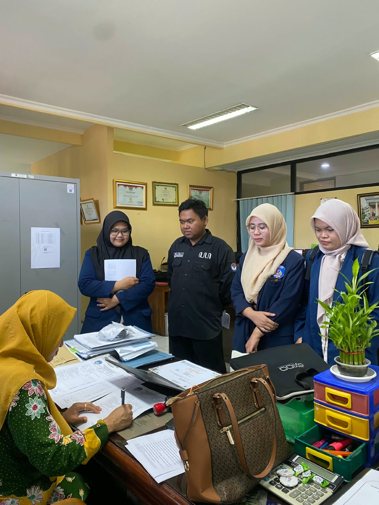
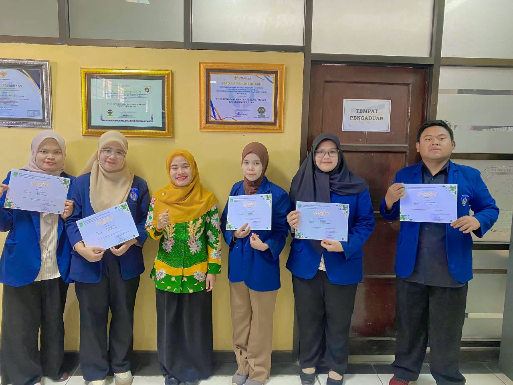
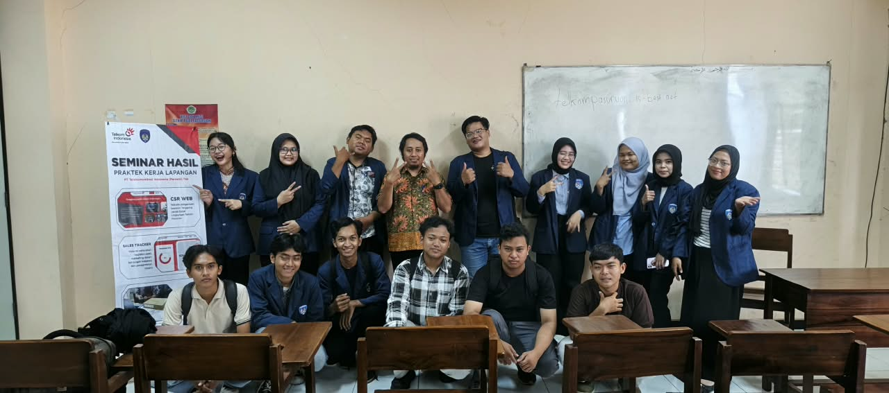
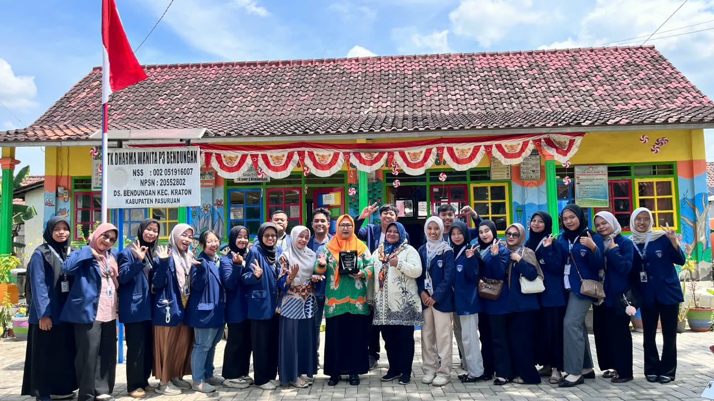
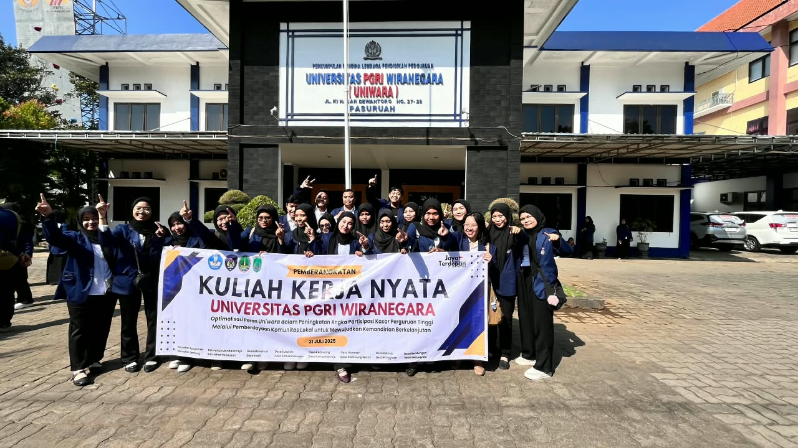
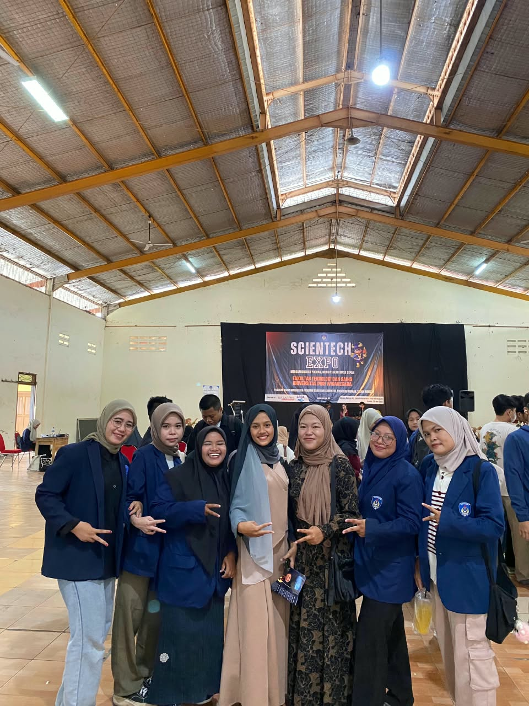

Halo, Saya
Yeni Kurniawati
Lulusan S.Kom dengan pencapaian akademis memuaskan, berfokus dan memiliki minat mendalam pada Web Development, Administrasi Data, serta Analisis Data (EDA).
Sarjana Ilmu Komputer (S.Kom)
Universitas PGRI Wiranegara
Tentang Saya
Ringkasan Profil
"Lulusan S.Kom dengan IPK 3.55/4.00 yang memiliki dedikasi tinggi pada Web Development, Administrasi Data, serta Analisis Data (EDA). Terbiasa merancang situs web responsif menggunakan HTML, CSS, PHP, dan WordPress, serta pengolahan dataset."
Memiliki pengalaman kerja nyata melalui program magang di Dinas Kependudukan dan Pencatatan Sipil Kabupaten Pasuruan serta PT Indie Partnership Digitech. Siap berkontribusi secara optimal dalam lingkungan kolaboratif yang dinamis dan berorientasi pada teknologi.
Universitas PGRI Wiranegara
Pasuruan, Jawa Timur
- Pencapaian akademis memuaskan dengan fokus keahlian pemrograman web dan analisis data.
- Aktif memperluas kompetensi melalui pelatihan sertifikasi teknologi informasi nasional dan internasional.
Pengalaman Kerja & Magang
Web Development Intern
Online InternshipPT. Indie Partnership Digitech
- Merancang dan mengembangkan landing page serta sales page responsif berbasis WordPress untuk klien bisnis lokal.
- Mengaplikasikan keahlian struktur HTML, CSS, dan CMS WordPress dalam pembuatan situs yang ramah pengguna.
Magang Administrasi & Pengolahan Data
Magang InstansiDinas Kependudukan dan Pencatatan Sipil Kabupaten Pasuruan
- Melakukan pengolahan, input, dan tata kelola administrasi data kependudukan secara teliti.
- Menggunakan perangkat perkantoran Microsoft Office (Excel & Word) untuk rekapitulasi dan pengarsipan data publik.
Galeri Foto Kegiatan & Kampus






Galeri Proyek Web & Analisis Data (EDA)
Dokumentasi hasil perancangan sistem informasi, website, serta proyek analitik data.

Sistem Informasi Pemesanan PodoEnak
Pengembangan aplikasi web pemesanan berbasis PHP, MySQL, dan metode Waterfall.

Website Panti Asuhan Darul Muttaqin
Perancangan website profil institusi sosial lengkap dengan galeri dan informasi kegiatan.

EDA Dashboard Prestasi Siswa
Dashboard interaktif untuk eksplorasi data statistik prestasi siswa dan visualisasi nilai akademik.
Sertifikasi & Pelatihan
Daftar sertifikat resmi keahlian teknologi, analitik, dan bahasa.
Classical Cryptography for Beginner
14 Mei 2025[cite: 1]
ID: CCFB01105251927[cite: 1]
Introduction to Information Security
14 Mei 2025[cite: 5]
ID: PKMI01105251912[cite: 5]
Intro to Data Analytics
16 Februari 2024[cite: 6]
Mini Course Certified[cite: 6]
Data Science
20 Desember 2025[cite: 9]
ID: 2025/250/57082[cite: 9]
Fundamentals of Machine Learning
6 Februari 2025[cite: 10]
Microsoft Achievement[cite: 10]
ESL001: Elementary English
29 Oktober 2026[cite: 11, 12]
ID: 3356031714YK[cite: 11, 12]
Guide to Learn Python with AI
13 September 2024[cite: 13]
ID: DQLABAI001ESJDLI[cite: 13]
Intro to Digital Marketing
19 Januari 2024[cite: 14]
Mini Course Certified[cite: 14]